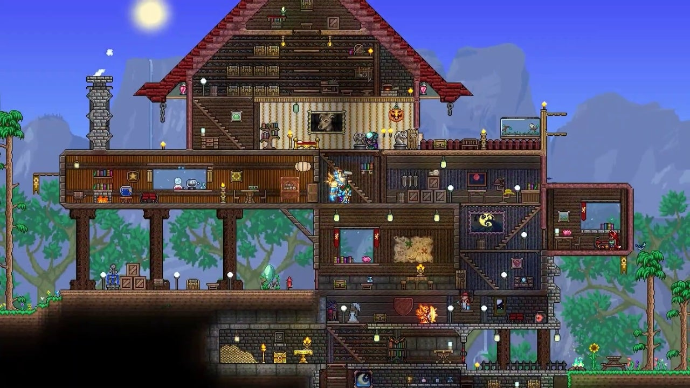
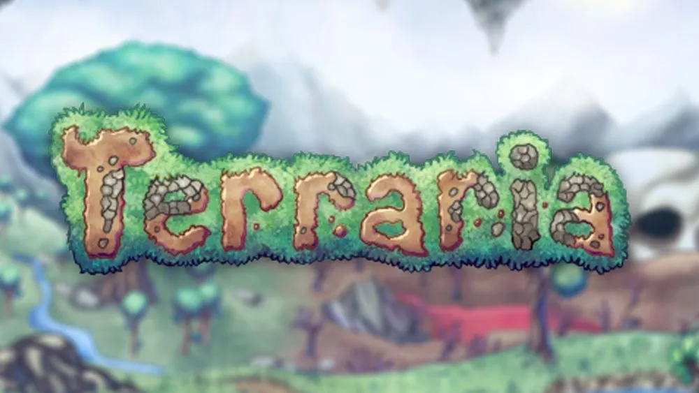
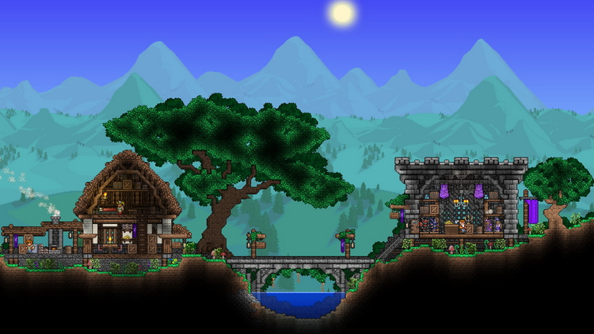

Terraria is an action-adventure sandbox game developed by American studio Re-Logic. It was released in 2011 for Microsoft Windows computers and distributed through the Steam digital distribution system. After the release, Terraria was ported to other operating systems for personal computers and mobile devices, as well as to game consoles. Codeglue published the game for mobile devices, while 505 Games, Spike Chunsoft (English) Russian. and Pipeworks (eng.)rus. - for game consoles. Spike Chunsoft localized the game in Japan, Headup Games in Germany.
  